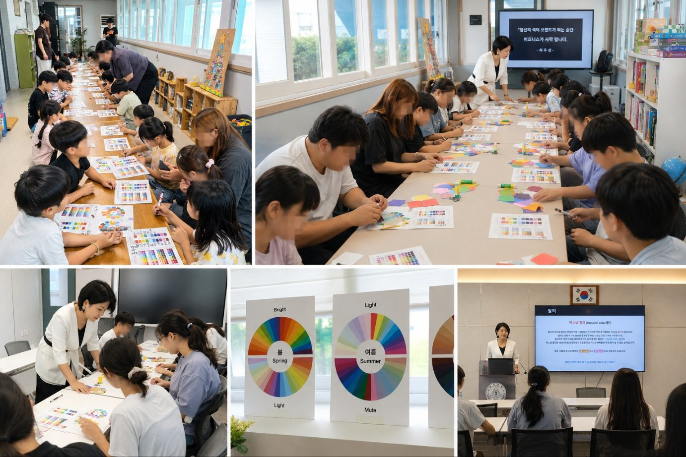
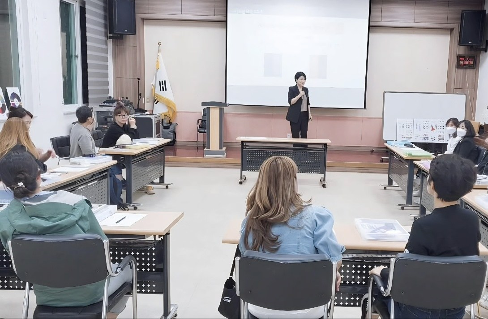
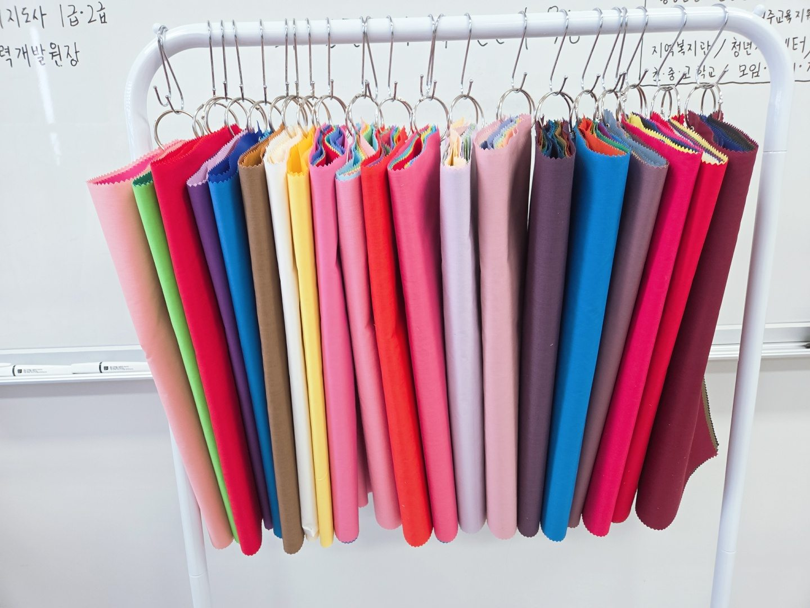
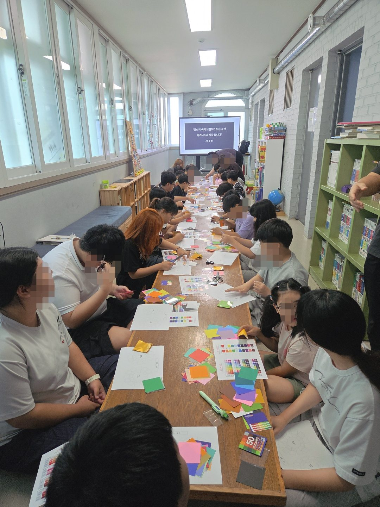
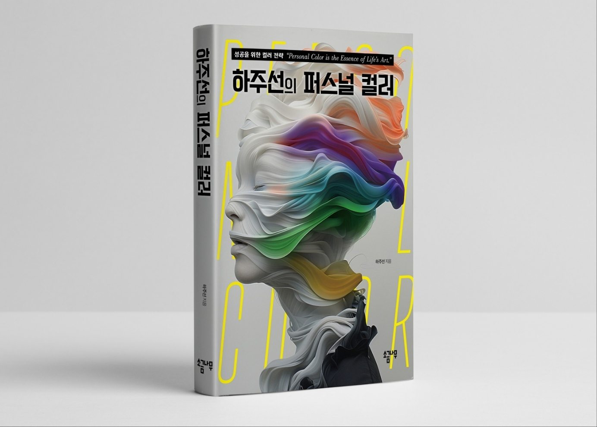
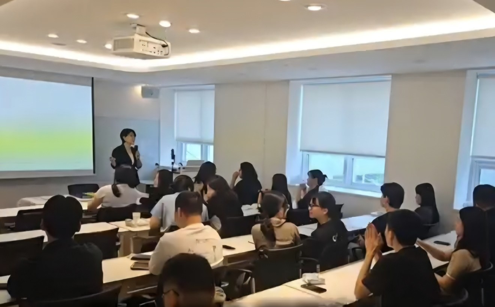

교육 · 강사 과정
퍼스널컬러 강사 자격증 교육
퍼스널컬러 강사를 꿈꾸지만 어디서부터 시작해야 할지 막막한 분을 위한 과정이에요. 자격증에서 멈추지 않고, 강사로 첫발을 내딛는 준비까지 이어 갑니다.
- 퍼스널컬러 지도사 민간자격 과정
- 첫 출강을 위한 준비까지 함께
- 원주 교육원에서 직접 만나 배우는 수업
원주 · 강원 퍼스널컬러 교육원
40대에 시작해도 될지 망설여진다면, 원주에서 자격증부터 차근차근 시작하세요. 퍼스널컬러 지도사 민간자격을 발행하는 인증 교육원입니다.

하주선 대표퍼스널컬러 지도사
Services
하주선퍼스널컬러교육원은 퍼스널컬러 강사 교육, 1:1 퍼스널컬러&체형분석, 기업·학교·기관 강의를 함께 운영합니다. 지금 필요한 쪽을 골라 살펴보세요.

교육 · 강사 과정
퍼스널컬러 강사를 꿈꾸지만 어디서부터 시작해야 할지 막막한 분을 위한 과정이에요. 자격증에서 멈추지 않고, 강사로 첫발을 내딛는 준비까지 이어 갑니다.
진단 · 컨설팅
옷이나 화장품을 골라도 늘 어딘가 어색하게 느껴진다면, 나에게 어울리는 색부터 찾아보세요. 1:1로 퍼스널컬러와 체형을 함께 분석해요.
강의 · 기업·학교·기관
여러 사람이 함께 듣는 퍼스널컬러·이미지메이킹 강의예요. 기업강의, 학교강의, 교사연수, 기관강의, 워크숍으로 진행해요.

강의 기관 50곳 이상, 현장에서 가르쳐 온 퍼스널컬러
원주교육지원청 퍼스널컬러 강좌 협력 기관For you
나이 때문에 늦은 건 아닐까 고민된다면, 지금 상황과 목표부터 들려주세요. 시작할 수 있는 길을 함께 찾아봐요.
자격증은 출발점이에요. 자격을 딴 다음 무엇을 준비해야 강의를 나갈 수 있는지 함께 짚어 드려요.
강원도 원주시 입춘로에 있는 교육원에서 직접 배우실 수 있어요. 오가는 부담이 줄면 끝까지 해내기도 쉬워져요.
옷과 화장을 고를 때마다 망설여진다면, 퍼스널컬러 진단으로 나만의 기준을 세워 보세요.
Our promise
하주선퍼스널컬러교육원은 원주·강원에서 퍼스널컬러 강사를 꿈꾸는 분이 자격증부터 첫 출강까지 갈 수 있도록 곁에서 돕는 교육원입니다.
How to start
처음 시작하는 분도 전체 흐름을 한눈에 볼 수 있게 정리했어요. 어디쯤에서 시작하면 좋을지는 상담에서 함께 정해요.
지금 상황과 목표를 듣고, 어떤 과정이 맞을지 함께 정합니다.
사람의 색을 봄·여름·가을·겨울 같은 유형으로 나눠 보는 기본기를 익힙니다.
여러 색의 천을 얼굴 아래에 대어 보며 어울리는 색을 찾는 연습을 합니다.
자격을 취득한 뒤, 강의를 나가기 위한 준비까지 이어 갑니다.

원주 입춘로, 가까운 곳에서 배웁니다.
강원도 원주시 입춘로 45 엔터비즈타워 B동 504호
Why us
강원도 원주에 있어 서울이나 수도권까지 오가지 않고 배울 수 있어요.
자격 취득에서 멈추지 않고, 첫 출강을 준비하는 과정까지 함께합니다.
퍼스널컬러 교육과 진단 컨설팅을 함께 운영해, 배우려는 분도 진단받으려는 분도 같은 곳에서 상담할 수 있어요.
Director
하주선퍼스널컬러교육원 대표
하주선 퍼스널컬러 교육원 & 부설 진단센터 대표입니다. 퍼스널컬러 지도사 민간자격을 발행하는 인증 교육원을 운영하고, 원주교육지원청 퍼스널컬러 강좌 협력 기관으로 함께하고 있습니다.
세경대학교·배재대학교 퍼스널컬러지도사 자격과정, 상지대학교·강릉원주대학교·한림대학교 특강을 맡았고, 건강보험심사평가원과 원주문화원 등 50곳 이상의 기관에서 강의했습니다. 국가자격 미용사(일반·피부)를 갖고 있으며, 저서로 「하주선의 퍼스널 컬러」가 있습니다.

Book
성공을 위한 컬러 전략 — “Personal Color is the Essence of Life’s Art.”
퍼스널 컬러를 잘 활용하려면 색에 대한 기초 지식이 필요해요. 이 책은 미술을 몰라도 이해할 수 있도록 직관적인 예시와 생활 속 색 활용으로 설명하고, 웜톤·쿨톤을 넘어 명도와 채도에 따른 12가지 계절 컬러를 제안합니다.
Gallery
학교 수업부터 청년 대상 강의까지, 실제로 진행한 퍼스널컬러 수업 모습이에요. 사진을 누르면 크게 볼 수 있어요.
Moments
강의실 밖에서도 퍼스널컬러를 전해 왔어요. 군부대 강의부터 지역 축제 진단 부스까지 함께한 순간이에요.
2023. 8. 4.
군부대 퍼스널컬러 강의에서 BTS 제이홉의 퍼스널컬러를 진단하고, "To. 하주선님"이라고 적힌 친필 사인을 받았어요.
2023. 5. 5.
횡성군청소년수련관과 함께 퍼스널컬러 진단 부스를 운영했어요. 지역 축제와 행사에서 진단 부스를 꾸준히 열어 왔습니다.

Checklist
어느 교육원을 고르든 아래 다섯 가지를 확인해 보시면 후회가 줄어요.
발급 자격이 민간자격정보서비스(pqi.or.kr)에 등록돼 있는지 확인해요.
진단은 직접 해 봐야 늘어요. 실습 시간이 충분한지 살펴보세요.
자격증을 딴 다음 무엇을 도와주는지 꼭 물어보세요.
꾸준히 다닐 수 있어야 끝까지 마칠 수 있어요.
나와 비슷한 상황에서 시작한 분의 이야기가 있는지 확인해 보세요.
강원도 원주시 입춘로 45 엔터비즈타워 B동 504호에 있어요. 지도는 오시는 길에서 보실 수 있어요.
영업시간은 09시~19시이고, 일요일은 쉽니다.
퍼스널컬러 자격증은 대부분 자격기본법에 따라 등록한 민간자격이며, 국가가 공인한 자격은 아니에요. 등록 여부는 민간자격정보서비스(pqi.or.kr)에서 자격 이름이나 등록번호로 조회할 수 있어요.
영업시간(09시~19시) 안에 010-5364-0480으로 전화 주시거나, skin0480@naver.com으로 이메일을 보내 주세요.
궁금한 점이 있다면 부담 없이 전화나 이메일로 물어보세요. 영업시간은 09시~19시, 일요일은 쉽니다.